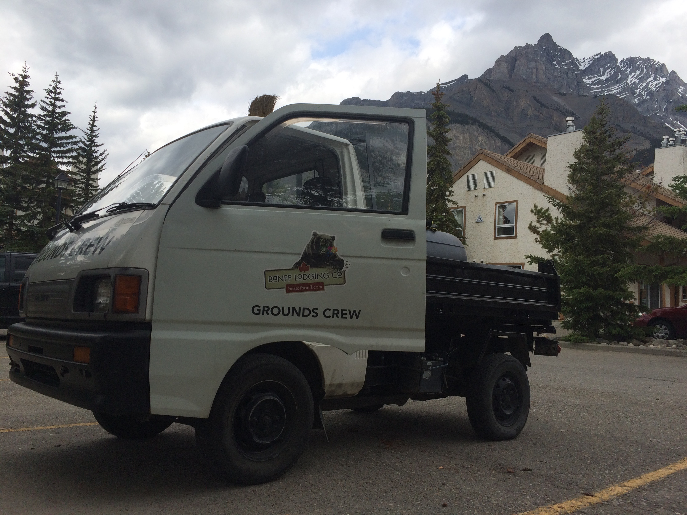
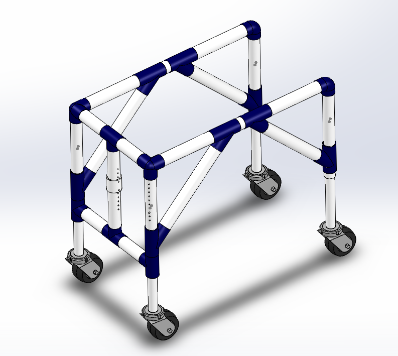
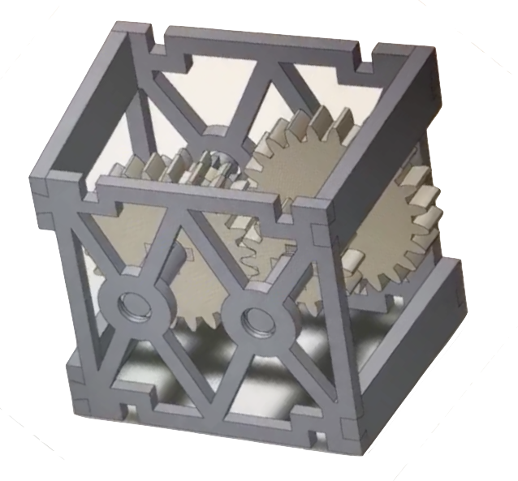
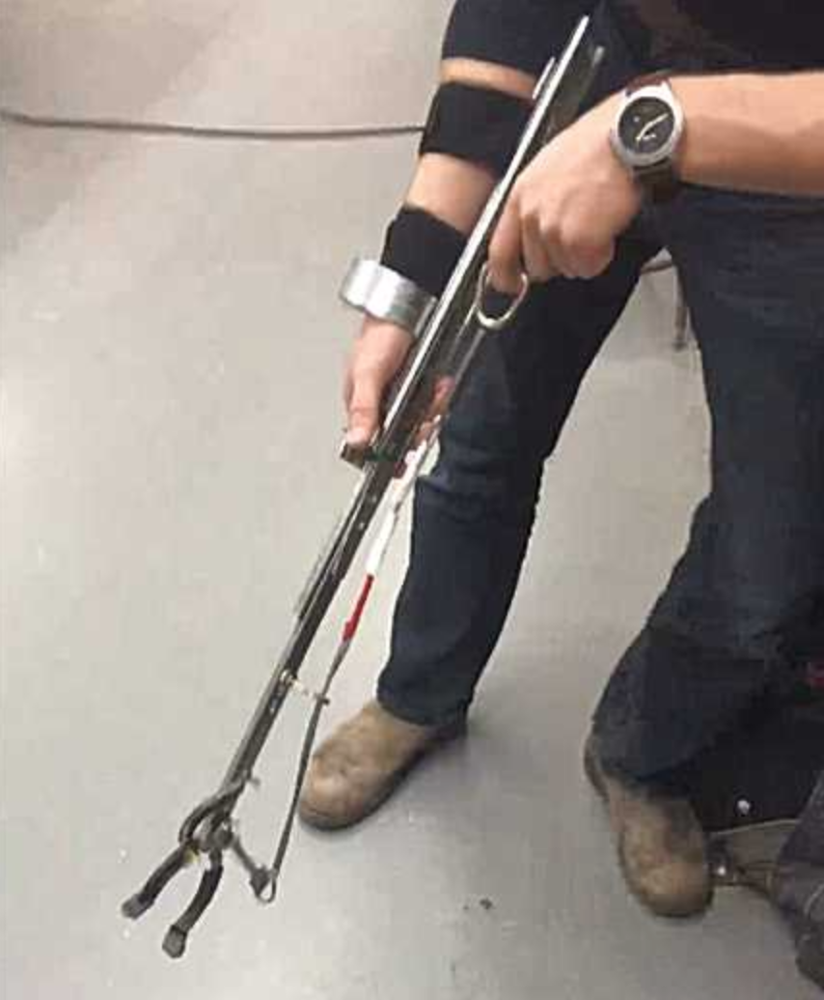
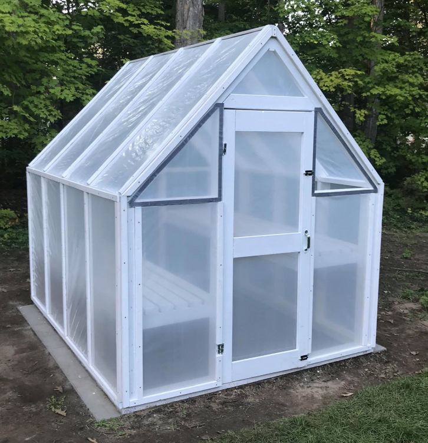

Motivated; Innotative; Adaptable
Student - Queen's University
Kingston, ON Canada
c.douglas@queensu.ca
+1 (705) 937 1620
Technical Skills
Coding
MATLAB
Visual Basic
Arduino IDE
HTML
3D Modeling/Analysis
Solid Works/Edge
FARO
ANSYS
Data Modeling
Excel
Minitab
Professional Skills
Time Management
Dedication
Conflict Resolution
Communication
Decision Making
Responsibilities included:

Responsibilities included:
Management of my own small buisness. Responsibilities included:

Personally involved with the "Walk With Me" project which aimes to design a modular assistive device that helps those born with Cerebral Palsy walk again.
Specific design aspects included:
Please visit www.qbitqueensu.com for more information.

Construction of a gearbox designed for specific performace outcomes.
Specific design aspects included:

Tasked with designing a device which the client could use to pick up or grab out-of-reach objects.
Specific design aspects included:

Including:
| Sports/Activites | Studies | Misc. |
|---|---|---|
| Hockey/Volleyball | General Biomechanical Field | Movies |
| Skiing | Wearable Technology | Computer Science |
| Hiking/Canoeing/Biking | Robotics | DYI Projects |
| Boating | Prosthetics | Travelling |
| Dedication | Work Ethic | Attitude/Personality |
|---|---|---|
| I very much enjoy team-based projects and thus have always shown dedication to the task at hand. My work has always and will continue to be completed on time and with as much effort put into it as possible. In my experience, establishing good comminucation norms within the group has always been the keystone to project successfullness in the past, and I plan on emphasizing this throughout the term. | I've always been an incredibly hard worker with a strong work ethic. You can always count on me to consistently produce high-quality work as I will be determined to succeeed. Since I like to think that I work efficiently with my time, I also tend to have additional time to help out my other teammates along the way. | I always look forward to really getting to know my teammates throughout the project and I feel that my happy-go-lucky personality bodes well for me in group-based scenarios. Interpersonal skills such as being an excellent listener and having effective conflict management skills are just a few examples of what I tend to bring to the table. |
After graduating from Queen's University, I would like to begin my career as an engineer as soon as possible. Ideally, I would like to be a position with an emphasis in collaborative design, especially in the biomechanical field. My ultimate goal is to be given the opportunity to help design exciting and innovative devices for those in need. Realisictally speaking, upon graduation I will likely be looking for start-up companies working in the biomechanical or related fields. As I am currently in the middle of completing Queen's Certificate in Buissness, what I have learned from these courses has sparked more of an interest in buisness and entrepreneurship as I intitially thought. As such, completing an MBA is something I am currently interested in. I will also likely consider aquiring my P.Eng.
I believe my strengths collectively arise from my interpersonal abilities. I would not consider myself the extroverted type, but I know how to play my introverted side to my advantage. My high patience levels, calm, collected and easy going personality, and just overall kind nature make building strong relationships with all of my partners a breeze. In addition, I also pride myself on my strong work ethic. I'm consistently driven to achieve whatever I set my mind to, and value thoroughness and precision along the way. I'm always pushing myself to be the best I can be, attempting to excel beyond what I have already achieved. Finally, I'd also say that I am a very quick learner and a great listner, two qualities I'd argue are essential for all team members. I'm able to adapt to unforseen circumstances and quickly change gears to get the team back on track.
I've always struggled with public speaking and thus effectively delivering presentations have typically been a challenge for me. I think this stems from the fact that I tend to be a farily shy and introverted person. I realize that communication via meetings or presentations are especially commonplace in a real-world engineering environment (I've seen it first hand during my time working at Magna). Therefore, I've recently attempted to take on as many opporunities as possible in which speaking up in front of crowds is required. Whether it be answer questions in lecture, or offering to speak longer during presentations, I'm actively working on diminishing this personal weakness. Another fault I have is tending to be a people-pleaser. This often results in the group-think phenomenon which can truly hold back a team from achieving their ultimate potential.